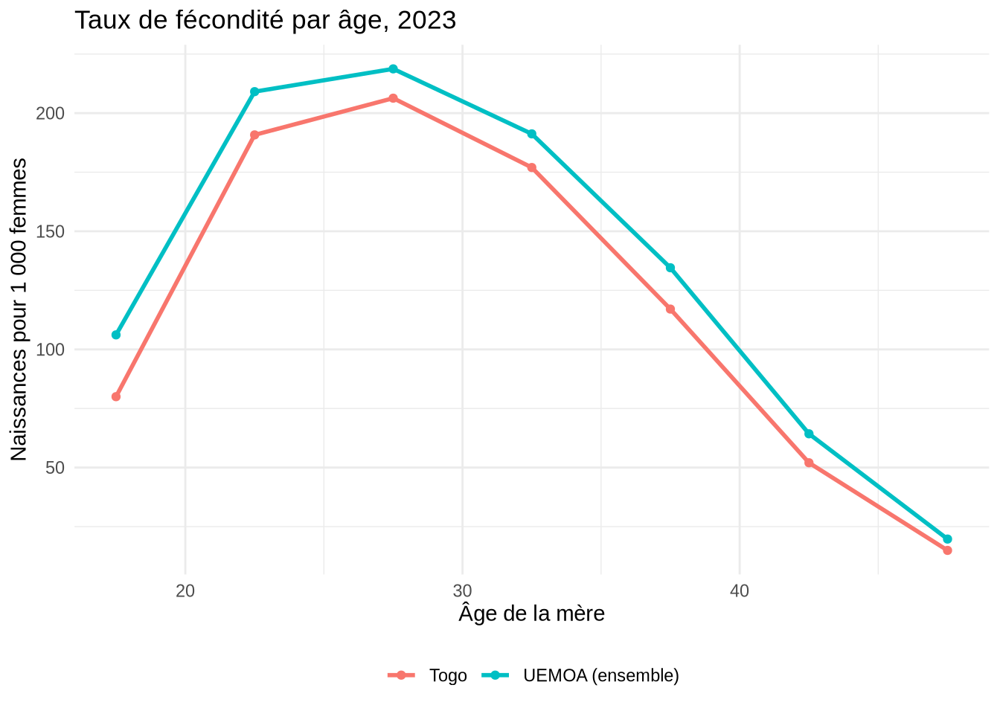
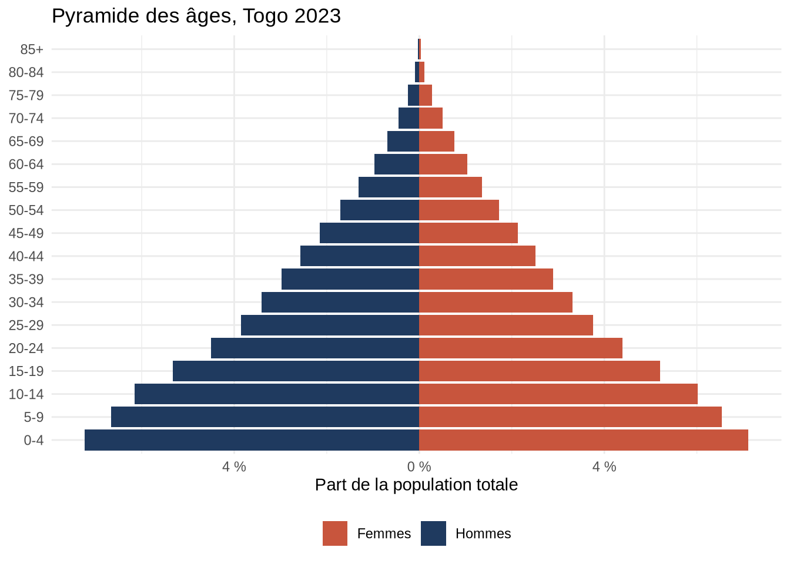

library(tidyverse)
# Choisissez votre pays : "Bénin", "Burkina Faso", "Côte d'Ivoire",
# "Guinée-Bissau", "Mali", "Niger", "Sénégal" ou "Togo"
mon_pays <- "Togo"Ce que vous allez faire
Calculer un ISF ou une table de mortalité, vous savez le faire : c’est votre métier. Ici, le code est fourni et s’exécute en quelques minutes. Le temps du labo est consacré à ce que les tableaux statistiques ne disent pas d’eux-mêmes : interpréter les résultats à l’aide des théories vues ce matin, et questionner les chiffres, leurs sources et leurs catégories.
Chaque étape suit le même schéma :
- Calculer : exécuter le code et vérifier le résultat (5 minutes au plus) ;
- Interpréter : relier le résultat à une théorie du cours ;
- Questionner : examiner ce que l’indicateur mesure mal ou laisse de côté.
| Étape | Calculer | Interpréter avec | Durée |
|---|---|---|---|
| 1. Fécondité | TBN, taux par âge, ISF, âge moyen à la maternité | Coale ; perspectives féministe et antiraciste | 20 min |
| 2. Mortalité | table de mortalité, e₀, ₅q₀, ₄₅q₁₅ | Omran (transition épidémiologique) | 20 min |
| 3. Structure par âge | pyramide, rapport de dépendance, âge médian | Bloom (dividende démographique), Lutz (dividende d’éducation) | 15 min |
| 4. Standardisation et décomposition | TBM standardisé, ICM, décomposition du TBN | inertie démographique ; ce qu’une décomposition n’explique pas | 20 min |
| 5. Synthèse | tableau des huit pays | Notestein, Tabutin et Schoumaker, Mason | 15 min |
Travaillez en équipe : une personne exécute le code, les autres préparent les réponses aux questions. Le même calcul existe dans le classeur Excel jour1-labo-indicateurs.xlsx : choisissez l’outil le plus commode. Les réponses aux questions alimentent directement la section 1 de votre note pays.
Les données
Le fichier jour1_tableaux_uemoa_2023.csv contient, pour chacun des huit pays et pour l’année 2023, les tableaux qu’un recensement produit à partir de deux questions classiques : « naissances des 12 derniers mois » et « décès survenus dans le ménage au cours des 12 derniers mois ».
| Colonne | Contenu |
|---|---|
pays, code_pays |
pays (code des Nations Unies) |
age, groupe_age |
début du groupe d’âge (0, 1, 5, 10… 85) et son libellé |
pop_hommes, pop_femmes |
population au milieu de l’année |
deces_hommes, deces_femmes |
décès de l’année, selon l’âge au décès |
naissances |
naissances de l’année, selon l’âge de la mère (15-19 à 45-49) |
D’où viennent ces chiffres ? Ils sont reconstitués à partir des World Population Prospects 2024 des Nations Unies (taux par âge appliqués aux populations par âge). Ce sont des données agrégées et publiques : aucune microdonnée. Avantage : vous pouvez vérifier vos calculs en les comparant aux valeurs officielles publiées par l’ONU (étapes 1 et 2).
Préparation
donnees <- read_csv("donnees/jour1_tableaux_uemoa_2023.csv")
officiel <- read_csv("donnees/wpp2024_uemoa_indicateurs.csv") %>%
filter(annee == 2023)
mon_df <- donnees %>% filter(pays == mon_pays)
mon_df# A tibble: 19 × 9
code_pays pays age groupe_age pop_hommes pop_femmes deces_hommes
<dbl> <chr> <dbl> <chr> <dbl> <dbl> <dbl>
1 768 Togo 0 0 141311 138444 6680
2 768 Togo 1 1-4 539270 530798 2576
3 768 Togo 5 5-9 626868 615033 1226
4 768 Togo 10 10-14 579153 566797 797
5 768 Togo 15 15-19 501020 489336 1025
6 768 Togo 20 20-24 423801 413278 1334
7 768 Togo 25 25-29 362702 353546 1148
8 768 Togo 30 30-34 321053 312099 1198
9 768 Togo 35 35-39 279875 272122 1221
10 768 Togo 40 40-44 241357 236221 1400
11 768 Togo 45 45-49 202849 200575 1578
12 768 Togo 50 50-54 161062 162647 1810
13 768 Togo 55 55-59 123492 128018 2018
14 768 Togo 60 60-64 91688 97895 2276
15 768 Togo 65 65-69 65094 71501 2482
16 768 Togo 70 70-74 42321 47691 2671
17 768 Togo 75 75-79 22548 26031 2415
18 768 Togo 80 80-84 8758 10401 1552
19 768 Togo 85 85+ 2517 3220 766
# ℹ 2 more variables: deces_femmes <dbl>, naissances <dbl>Étape 1 — Fécondité
Taux brut de natalité
Le taux brut de natalité rapporte les naissances de l’année à la population totale, pour 1 000 habitants.
mon_df %>%
summarise(TBN = 1000 * sum(naissances) / sum(pop_hommes + pop_femmes))# A tibble: 1 × 1
TBN
<dbl>
1 31.2Il dépend de la fécondité, mais aussi de la structure par âge : une population jeune a beaucoup de femmes en âge d’avoir des enfants. Il ne permet donc pas de comparer la fécondité de deux pays.
Taux de fécondité par âge
Pour chaque groupe d’âge, on divise les naissances par le nombre de femmes du groupe.
fecondite <- mon_df %>%
filter(naissances > 0) %>%
mutate(taux = naissances / pop_femmes) %>%
select(groupe_age, age, naissances, pop_femmes, taux)
fecondite# A tibble: 7 × 5
groupe_age age naissances pop_femmes taux
<chr> <dbl> <dbl> <dbl> <dbl>
1 15-19 15 39141 489336 0.0800
2 20-24 20 78847 413278 0.191
3 25-29 25 72944 353546 0.206
4 30-34 30 55235 312099 0.177
5 35-39 35 31855 272122 0.117
6 40-44 40 12288 236221 0.0520
7 45-49 45 2994 200575 0.0149Indice synthétique de fécondité et âge moyen à la maternité
L’ISF est le nombre moyen d’enfants qu’aurait une femme qui connaîtrait, à chaque âge, les taux de l’année. Chaque groupe couvrant 5 ans, on multiplie la somme des taux par 5.
L’âge moyen à la maternité est la moyenne des âges, pondérée par les taux. On prend le milieu de chaque groupe (17,5 ans pour 15-19, etc.).
fecondite %>%
summarise(ISF = 5 * sum(taux),
age_moyen_maternite = sum((age + 2.5) * taux) / sum(taux))# A tibble: 1 × 2
ISF age_moyen_maternite
<dbl> <dbl>
1 4.19 29.1Vérifier son calcul
officiel %>% filter(pays == mon_pays) %>% select(pays, annee, isf)# A tibble: 1 × 3
pays annee isf
<chr> <dbl> <dbl>
1 Togo 2023 4.19Les deux valeurs doivent être égales à 0,01 près.
uemoa_fec <- donnees %>%
filter(naissances > 0) %>%
group_by(age, groupe_age) %>%
summarise(naissances = sum(naissances), pop_femmes = sum(pop_femmes), .groups = "drop") %>%
mutate(taux = naissances / pop_femmes, pays = "UEMOA (ensemble)")
bind_rows(fecondite %>% mutate(pays = mon_pays), uemoa_fec) %>%
ggplot(aes(x = age + 2.5, y = 1000 * taux, colour = pays)) +
geom_line(linewidth = 1) +
geom_point() +
labs(x = "Âge de la mère", y = "Naissances pour 1 000 femmes", colour = NULL,
title = "Taux de fécondité par âge, 2023") +
theme_minimal() +
theme(legend.position = "bottom")
Interpréter et questionner
Question 1 — Interpréter. Pour Coale (1973), la fécondité baisse quand trois conditions sont réunies : la fécondité devient un choix conscient, les couples ont intérêt à limiter les naissances, et ils en ont les moyens. Laquelle de ces conditions vous semble la moins remplie dans votre pays ? Quelles données de votre institut permettraient de le vérifier (nombre idéal d’enfants, besoins non satisfaits en planification familiale, âge au premier mariage) ?
Question 2 — Questionner. Au Niger et au Mali, près de 15 % des filles de 15 à 19 ans ont un enfant chaque année, contre 6 % au Sénégal. On explique souvent cet écart par la « culture ». Quelles autres explications proposeraient les perspectives féministe et antiraciste vues ce matin (mariage précoce, scolarisation des filles, accès aux services, qui décide de la fécondité) ? Et que sait-on de la fécondité des hommes, que l’ISF ignore ?
Étape 2 — Mortalité : la table de mortalité abrégée
La table de mortalité transforme les taux de mortalité de l’année en l’histoire d’une génération fictive de 100 000 naissances qui connaîtrait ces taux toute sa vie.
| Colonne | Signification | Calcul |
|---|---|---|
| ₙmₓ | taux de mortalité entre x et x+n | décès / population |
| ₙaₓ | années vécues en moyenne dans l’intervalle par ceux qui y meurent | 0,3 an avant 1 an ; 1,5 an entre 1 et 4 ans ; n/2 ensuite |
| ₙqₓ | quotient : probabilité de mourir entre x et x+n | n·m / (1 + (n − a)·m) ; 1 pour le groupe ouvert 85+ |
| lₓ | survivants à l’âge x | l₀ = 100 000, puis lₓ₊ₙ = lₓ·(1 − ₙqₓ) |
| ₙdₓ | décès entre x et x+n | lₓ · ₙqₓ |
| ₙLₓ | années vécues entre x et x+n | n·(lₓ − ₙdₓ) + ₙaₓ·ₙdₓ ; lₓ / mₓ pour 85+ |
| Tₓ | années restant à vivre au-delà de x | somme des ₙLₓ à partir de x |
| eₓ | espérance de vie à l’âge x | Tₓ / lₓ |
table_mortalite <- function(df, a0 = 0.3, a1 = 1.5) {
df %>%
arrange(age) %>%
mutate(
pop = pop_hommes + pop_femmes,
deces = deces_hommes + deces_femmes,
n = lead(age) - age, # NA pour le groupe ouvert 85+
mx = deces / pop,
ax = case_when(age == 0 ~ a0,
age == 1 ~ a1,
TRUE ~ n / 2),
qx = if_else(is.na(n), 1, n * mx / (1 + (n - ax) * mx)),
lx = 100000 * cumprod(lag(1 - qx, default = 1)),
dx = lx * qx,
Lx = if_else(is.na(n), lx / mx, n * (lx - dx) + ax * dx),
Tx = rev(cumsum(rev(Lx))),
ex = Tx / lx
) %>%
select(groupe_age, age, n, pop, deces, mx, ax, qx, lx, dx, Lx, Tx, ex)
}
ma_table <- table_mortalite(mon_df)
ma_table %>%
mutate(across(c(mx, qx), ~ round(.x, 5)),
across(c(lx, dx, Lx, Tx), round),
ex = round(ex, 1))# A tibble: 19 × 13
groupe_age age n pop deces mx ax qx lx dx Lx
<chr> <dbl> <dbl> <dbl> <dbl> <dbl> <dbl> <dbl> <dbl> <dbl> <dbl>
1 0 0 1 2.80e5 11985 0.0428 0.3 0.0416 100000 4159 97088
2 1-4 1 4 1.07e6 4830 0.00451 1.5 0.0178 95841 1711 379085
3 5-9 5 5 1.24e6 3283 0.00264 2.5 0.0131 94130 1236 467558
4 10-14 10 5 1.15e6 1815 0.00158 2.5 0.00789 92894 733 462636
5 15-19 15 5 9.90e5 2410 0.00243 2.5 0.0121 92161 1115 458018
6 20-24 20 5 8.37e5 2857 0.00341 2.5 0.0169 91046 1541 451380
7 25-29 25 5 7.16e5 2615 0.00365 2.5 0.0181 89506 1619 443480
8 30-34 30 5 6.33e5 2570 0.00406 2.5 0.0201 87887 1766 435018
9 35-39 35 5 5.52e5 2567 0.00465 2.5 0.0230 86121 1979 425655
10 40-44 40 5 4.78e5 2742 0.00574 2.5 0.0283 84141 2381 414753
11 45-49 45 5 4.03e5 2917 0.00723 2.5 0.0355 81760 2903 401541
12 50-54 50 5 3.24e5 3308 0.0102 2.5 0.0498 78857 3929 384461
13 55-59 55 5 2.52e5 3685 0.0146 2.5 0.0707 74928 5295 361401
14 60-64 60 5 1.90e5 4360 0.023 2.5 0.109 69633 7572 329234
15 65-69 65 5 1.37e5 4978 0.0364 2.5 0.167 62061 10364 284394
16 70-74 70 5 9.00e4 5549 0.0616 2.5 0.267 51697 13807 223966
17 75-79 75 5 4.86e4 5094 0.105 2.5 0.415 37890 15740 150100
18 80-84 80 5 1.92e4 3357 0.175 2.5 0.609 22150 13494 77015
19 85+ 85 NA 5.74e3 1703 0.297 NA 1 8656 8656 29159
# ℹ 2 more variables: Tx <dbl>, ex <dbl>lag(1 - qx, default = 1) décale la colonne d’une ligne : la proportion de survivants à l’âge x est le produit des (1 − q) des groupes précédents. rev(cumsum(rev(Lx))) fait la somme « par le bas » de la colonne.
Les indicateurs tirés de la table
l <- setNames(ma_table$lx, ma_table$age)
tibble(
e0 = ma_table$ex[1],
q5_pour_1000 = 1000 * (1 - l[["5"]] / l[["0"]]),
q45_15_pour_1000 = 1000 * (1 - l[["60"]] / l[["15"]])
)# A tibble: 1 × 3
e0 q5_pour_1000 q45_15_pour_1000
<dbl> <dbl> <dbl>
1 62.8 58.7 244.- e₀ : espérance de vie à la naissance.
- ₅q₀ : sur 1 000 naissances, nombre d’enfants qui meurent avant 5 ans.
- ₄₅q₁₅ : sur 1 000 personnes de 15 ans, nombre qui meurent avant 60 ans.
Vérifier son calcul
officiel %>% filter(pays == mon_pays) %>% select(pays, annee, e0)# A tibble: 1 × 3
pays annee e0
<chr> <dbl> <dbl>
1 Togo 2023 62.7L’écart avec la valeur de l’ONU doit être inférieur à 0,1 an.
Espérance de vie des femmes et des hommes
femmes <- mon_df %>% mutate(pop_hommes = 0, deces_hommes = 0)
hommes <- mon_df %>% mutate(pop_femmes = 0, deces_femmes = 0)
tibble(e0_femmes = table_mortalite(femmes)$ex[1],
e0_hommes = table_mortalite(hommes)$ex[1])# A tibble: 1 × 2
e0_femmes e0_hommes
<dbl> <dbl>
1 62.9 62.6Interpréter et questionner
Question 3 — Interpréter. Omran (1971) décrit trois âges de la transition épidémiologique : les pestilences et les famines, le recul des pandémies, puis les maladies dégénératives et « de société ». Où se situe votre pays ? Comparez ₅q₀ et ₄₅q₁₅ : les gains récents viennent-ils surtout des enfants ou des adultes ? Qu’est-ce que cela implique pour le système de santé (le « double fardeau ») ?
Question 4 — Questionner. Dans la plupart des pays du monde, les femmes vivent 4 à 6 ans de plus que les hommes. Quel écart obtenez-vous ? Au Togo, il n’est que de 0,3 an, car l’ONU y estime une mortalité des filles de 2 à 12 ans plus forte que celle des garçons. Est-ce une réalité sociale (soins inégaux selon le sexe) ou un artefact du modèle ? Ces taux sont-ils observés ou estimés, et à partir de quelles données nationales ?
Étape 3 — Structure par âge
La pyramide des âges
pyramide <- mon_df %>%
mutate(age5 = if_else(age < 5, 0, age),
groupe = if_else(age < 5, "0-4", groupe_age)) %>%
group_by(age5, groupe) %>%
summarise(Hommes = sum(pop_hommes), Femmes = sum(pop_femmes), .groups = "drop") %>%
pivot_longer(c(Hommes, Femmes), names_to = "sexe", values_to = "pop") %>%
mutate(part = 100 * pop / sum(pop),
part = if_else(sexe == "Hommes", -part, part))
ggplot(pyramide, aes(x = part, y = reorder(groupe, age5), fill = sexe)) +
geom_col(width = 0.9) +
scale_x_continuous(labels = ~ paste0(abs(.x), " %")) +
scale_fill_manual(values = c(Hommes = "#1F3A5F", Femmes = "#C8553D")) +
labs(x = "Part de la population totale", y = NULL, fill = NULL,
title = paste("Pyramide des âges,", mon_pays, "2023")) +
theme_minimal() +
theme(legend.position = "bottom")
Grands groupes d’âge et rapport de dépendance
Le rapport de dépendance compare les personnes « à charge » (moins de 15 ans et 65 ans et plus) aux personnes de 15 à 64 ans, pour 100.
mon_df %>%
mutate(pop = pop_hommes + pop_femmes,
grand_groupe = case_when(age < 15 ~ "moins_15",
age >= 65 ~ "plus_65",
TRUE ~ "15_64")) %>%
group_by(grand_groupe) %>%
summarise(pop = sum(pop)) %>%
pivot_wider(names_from = grand_groupe, values_from = pop) %>%
mutate(total = moins_15 + `15_64` + plus_65,
pct_moins_15 = 100 * moins_15 / total,
pct_65_plus = 100 * plus_65 / total,
rapport_dependance = 100 * (moins_15 + plus_65) / `15_64`)# A tibble: 1 × 7
`15_64` moins_15 plus_65 total pct_moins_15 pct_65_plus rapport_dependance
<dbl> <dbl> <dbl> <dbl> <dbl> <dbl> <dbl>
1 5374636 3737674 300082 9412392 39.7 3.19 75.1Âge médian
La moitié de la population a moins que l’âge médian. On cherche le groupe d’âge où l’effectif cumulé dépasse la moitié de la population, puis on interpole à l’intérieur de ce groupe.
age_median <- function(df) {
s <- df %>%
mutate(age5 = if_else(age < 5, 0, age),
pop = pop_hommes + pop_femmes) %>%
group_by(age5) %>%
summarise(pop = sum(pop)) %>%
mutate(cumul = cumsum(pop), cumul_avant = lag(cumul, default = 0))
moitie <- sum(s$pop) / 2
g <- s %>% filter(cumul >= moitie) %>% slice(1)
g$age5 + 5 * (moitie - g$cumul_avant) / g$pop
}
age_median(mon_df)[1] 19.88977Interpréter et questionner
Question 5 — Interpréter. Pour Bloom, Canning et Sevilla (2003), la baisse du rapport de dépendance ouvre une fenêtre d’opportunité, à condition que les adultes trouvent un emploi, soient éduqués et en bonne santé, et que l’épargne soit investie. Pour Lutz et al. (2019), c’est d’abord l’éducation qui produit le dividende. Dans votre pays, quelle condition est le maillon le plus faible ? Avec quelles données de votre institut l’argumenteriez-vous ?
Question 6 — Questionner. Le rapport de dépendance suppose que les moins de 15 ans et les 65 ans et plus sont « à charge », et que les 15-64 ans sont « actifs ». Est-ce vrai dans votre pays : travail des enfants, jeunes encore scolarisés à 20 ans, personnes âgées qui travaillent, travail domestique non rémunéré des femmes ? Quel indicateur décrirait mieux la charge réelle ? (Piste : le rapport entre consommateurs et producteurs des comptes de transferts nationaux, NTA.)
Étape 4 — Standardisation et décomposition
Le taux brut de mortalité (TBM) et le taux brut de natalité (TBN) mélangent deux choses : les taux par âge (le risque de mourir ou d’avoir un enfant à chaque âge) et la structure par âge (le poids de chaque âge dans la population). Pour comparer deux pays, il faut séparer les deux.
La population type : l’ensemble de l’UEMOA
uemoa_tab <- donnees %>%
group_by(age, groupe_age) %>%
summarise(across(pop_hommes:naissances, sum), .groups = "drop")
type <- uemoa_tab %>%
mutate(pop = pop_hommes + pop_femmes,
deces = deces_hommes + deces_femmes,
m_uemoa = deces / pop, # taux de mortalité par âge de l'UEMOA
c_uemoa = pop / sum(pop)) %>% # structure par âge de l'UEMOA
select(age, m_uemoa, c_uemoa)Standardisation directe et indirecte du taux de mortalité
- Standardisation directe : on applique les taux par âge de chaque pays à une même structure par âge, celle de l’UEMOA. On obtient le TBM qu’aurait chaque pays s’il avait la structure par âge de l’Union.
- Standardisation indirecte : on applique les taux de l’UEMOA à la population de chaque pays, ce qui donne les décès « attendus ». L’indice comparatif de mortalité (ICM) rapporte les décès observés aux décès attendus. Un ICM de 1,10 signifie une mortalité supérieure de 10 % à celle de l’UEMOA, à structure par âge égale. Cette méthode est utile quand les décès par âge d’une région sont trop peu nombreux ou peu fiables : il suffit de connaître son total de décès.
standardisation <- donnees %>%
mutate(pop = pop_hommes + pop_femmes, deces = deces_hommes + deces_femmes) %>%
group_by(pays) %>%
mutate(m = deces / pop) %>%
left_join(type, by = "age") %>%
summarise(TBM = 1000 * sum(deces) / sum(pop),
TBM_standardise = 1000 * sum(m * c_uemoa),
deces_attendus = sum(m_uemoa * pop),
ICM = sum(deces) / deces_attendus) %>%
mutate(across(where(is.numeric), ~ round(.x, 2)))
standardisation# A tibble: 8 × 5
pays TBM TBM_standardise deces_attendus ICM
<chr> <dbl> <dbl> <dbl> <dbl>
1 Burkina Faso 7.96 8.32 175954. 1.05
2 Bénin 8.79 8.48 118108. 1.06
3 Côte d'Ivoire 7.67 7.7 246371. 0.98
4 Guinée-Bissau 7.06 6.95 17457. 0.88
5 Mali 8.59 8.73 187062. 1.11
6 Niger 8.84 8.59 211145. 1.11
7 Sénégal 5.58 5.01 153158. 0.67
8 Togo 7.72 7.5 76024. 0.96Le Sénégal a le TBM brut le plus faible de l’Union. Son avantage augmente après standardisation : sa population un peu plus âgée gonflait son TBM brut. Le Burkina Faso fait le chemin inverse : sa structure jeune masquait une mortalité supérieure à celle de l’Union.
Décomposition de l’écart de natalité (méthode de Kitagawa)
Le TBN s’écrit comme la somme, sur les groupes d’âge, de la part des femmes de cet âge dans la population (wₓ) multipliée par leur taux de fécondité (fₓ). L’écart de TBN entre votre pays (a) et l’UEMOA (b) se décompose exactement en deux parties :
- effet de structure = Σ (wₓᵃ − wₓᵇ) × (fₓᵃ + fₓᵇ) / 2 : la part de l’écart due à une proportion différente de femmes en âge d’avoir des enfants ;
- effet de fécondité = Σ (fₓᵃ − fₓᵇ) × (wₓᵃ + wₓᵇ) / 2 : la part de l’écart due à des taux de fécondité différents.
decomposer_tbn <- function(df_a, df_b) {
preparer <- function(df) {
df %>% transmute(age,
w = pop_femmes / sum(pop_hommes + pop_femmes),
f = if_else(naissances > 0, naissances / pop_femmes, 0))
}
preparer(df_a) %>%
inner_join(preparer(df_b), by = "age", suffix = c("_a", "_b")) %>%
summarise(TBN_pays = 1000 * sum(w_a * f_a),
TBN_uemoa = 1000 * sum(w_b * f_b),
ecart = TBN_pays - TBN_uemoa,
effet_structure = 1000 * sum((w_a - w_b) * (f_a + f_b) / 2),
effet_fecondite = 1000 * sum((f_a - f_b) * (w_a + w_b) / 2))
}
decomposer_tbn(mon_df, uemoa_tab)# A tibble: 1 × 5
TBN_pays TBN_uemoa ecart effet_structure effet_fecondite
<dbl> <dbl> <dbl> <dbl> <dbl>
1 31.2 34.8 -3.68 0.327 -4.01Vérifiez que effet_structure + effet_fecondite est bien égal à ecart.
donnees %>%
group_by(pays) %>%
group_modify(~ decomposer_tbn(.x, uemoa_tab)) %>%
ungroup() %>%
mutate(across(where(is.numeric), ~ round(.x, 2)))# A tibble: 8 × 6
pays TBN_pays TBN_uemoa ecart effet_structure effet_fecondite
<chr> <dbl> <dbl> <dbl> <dbl> <dbl>
1 Burkina Faso 31.7 34.8 -3.1 1.04 -4.14
2 Bénin 33.9 34.8 -0.92 0.38 -1.3
3 Côte d'Ivoire 32.0 34.8 -2.87 0.36 -3.23
4 Guinée-Bissau 30.1 34.8 -4.76 2.28 -7.03
5 Mali 40.1 34.8 5.22 -1.68 6.91
6 Niger 42.1 34.8 7.25 -2.48 9.73
7 Sénégal 29.5 34.8 -5.35 2.29 -7.64
8 Togo 31.2 34.8 -3.68 0.33 -4.01Interpréter et questionner
Question 7 — Interpréter. Au Niger et au Mali, l’effet de structure est négatif alors que la fécondité y est la plus forte de l’Union. Une très forte proportion d’enfants réduit la part des femmes de 15 à 49 ans. Que se passera-t-il quand ces enfants atteindront 15 ans, même si la fécondité baisse ? Ce phénomène porte un nom : l’inertie démographique (Keyfitz, 1971). Nous y reviendrons jeudi.
Question 8 — Questionner. Deux limites de ces outils : (a) standardiser, c’est choisir une norme. Nous avons pris l’UEMOA comme population type ; avec la population type mondiale de l’OMS, plus âgée, les valeurs changeraient. Qui choisit la norme de comparaison, et pourquoi cela compte-t-il ? (b) une décomposition est une comptabilité, pas une explication : elle dit combien de l’écart vient de la fécondité, pas pourquoi la fécondité diffère. Quelle théorie du matin mobiliseriez-vous pour expliquer l’effet de fécondité de votre pays ?
Cette décomposition porte sur des taux agrégés. Pour décomposer un écart entre deux groupes à partir de microdonnées (par exemple l’écart de mortalité des enfants entre milieu urbain et rural dans une EDS), on utilise la décomposition de Blinder-Oaxaca, qui s’appuie sur une régression. C’est le prolongement naturel de cette étape.
Étape 5 — Synthèse : votre pays parmi les huit
On regroupe tous les calculs dans une seule fonction, qu’on applique ensuite à chaque pays et à l’ensemble de l’UEMOA.
calculer_indicateurs <- function(df) {
lt <- table_mortalite(df)
pop <- sum(lt$pop)
fec <- df %>% filter(naissances > 0) %>% mutate(taux = naissances / pop_femmes)
p15 <- sum(lt$pop[lt$age < 15])
p65 <- sum(lt$pop[lt$age >= 65])
l <- setNames(lt$lx, lt$age)
tibble(
population_millions = pop / 1e6,
TBN = 1000 * sum(df$naissances) / pop,
TBM = 1000 * sum(lt$deces) / pop,
ISF = 5 * sum(fec$taux),
age_moyen_maternite = sum((fec$age + 2.5) * fec$taux) / sum(fec$taux),
e0 = lt$ex[1],
q5_pour_1000 = 1000 * (1 - l[["5"]] / l[["0"]]),
q45_15_pour_1000 = 1000 * (1 - l[["60"]] / l[["15"]]),
pct_moins_15 = 100 * p15 / pop,
pct_65_plus = 100 * p65 / pop,
rapport_dependance = 100 * (p15 + p65) / (pop - p15 - p65),
age_median = age_median(df)
)
}# Les huit pays
par_pays <- donnees %>%
group_by(pays) %>%
group_modify(~ calculer_indicateurs(.x)) %>%
ungroup()
# L'ensemble de l'UEMOA : on additionne d'abord les tableaux des huit pays
# (tableau uemoa_tab construit à l'étape 4)
uemoa <- uemoa_tab %>%
calculer_indicateurs() %>%
mutate(pays = "UEMOA (ensemble)")
synthese <- bind_rows(par_pays, uemoa) %>%
mutate(across(where(is.numeric), ~ round(.x, 1)))
knitr::kable(synthese)| pays | population_millions | TBN | TBM | ISF | age_moyen_maternite | e0 | q5_pour_1000 | q45_15_pour_1000 | pct_moins_15 | pct_65_plus | rapport_dependance | age_median |
|---|---|---|---|---|---|---|---|---|---|---|---|---|
| Burkina Faso | 23.3 | 31.7 | 8.0 | 4.2 | 29.3 | 61.1 | 77.4 | 257.3 | 42.1 | 2.6 | 81.0 | 18.5 |
| Bénin | 14.3 | 33.9 | 8.8 | 4.6 | 29.1 | 60.8 | 78.9 | 266.2 | 41.7 | 3.1 | 81.2 | 18.9 |
| Côte d’Ivoire | 31.5 | 32.0 | 7.7 | 4.3 | 29.1 | 62.0 | 67.6 | 292.7 | 41.1 | 2.6 | 77.5 | 19.2 |
| Guinée-Bissau | 2.2 | 30.1 | 7.1 | 3.8 | 29.5 | 64.1 | 69.7 | 230.8 | 39.0 | 3.2 | 73.0 | 20.1 |
| Mali | 24.1 | 40.1 | 8.6 | 5.6 | 28.9 | 60.4 | 92.3 | 249.3 | 46.3 | 2.4 | 95.0 | 16.6 |
| Niger | 26.6 | 42.1 | 8.8 | 6.1 | 29.2 | 61.2 | 117.3 | 204.8 | 46.8 | 2.6 | 97.5 | 16.4 |
| Sénégal | 18.3 | 29.5 | 5.6 | 3.8 | 30.0 | 68.7 | 35.7 | 170.7 | 38.4 | 3.6 | 72.5 | 20.3 |
| Togo | 9.4 | 31.2 | 7.7 | 4.2 | 29.1 | 62.8 | 58.7 | 244.4 | 39.7 | 3.2 | 75.1 | 19.9 |
| UEMOA (ensemble) | 149.7 | 34.8 | 7.9 | 4.7 | 29.1 | 62.0 | 81.2 | 245.4 | 42.7 | 2.8 | 83.5 | 18.3 |
# Pour le travail en équipe
write_csv(synthese, "indicateurs_uemoa_2023.csv")Interpréter : où en est chaque pays dans la transition ?
synthese %>%
filter(pays != "UEMOA (ensemble)") %>%
select(pays, ISF, e0, TBN, TBM) %>%
arrange(desc(ISF))# A tibble: 8 × 5
pays ISF e0 TBN TBM
<chr> <dbl> <dbl> <dbl> <dbl>
1 Niger 6.1 61.2 42.1 8.8
2 Mali 5.6 60.4 40.1 8.6
3 Bénin 4.6 60.8 33.9 8.8
4 Côte d'Ivoire 4.3 62 32 7.7
5 Burkina Faso 4.2 61.1 31.7 8
6 Togo 4.2 62.8 31.2 7.7
7 Guinée-Bissau 3.8 64.1 30.1 7.1
8 Sénégal 3.8 68.7 29.5 5.6Question 9 — Interpréter. La théorie classique (Notestein, 1945) prévoit une séquence : la mortalité baisse d’abord, la fécondité ensuite. Placez les huit pays dans les phases de la transition et dans les modèles africains de Tabutin et Schoumaker (2004). Le Niger a la fécondité la plus forte de l’Union mais une espérance de vie moyenne (5e sur 8), supérieure à celle du Bénin, du Burkina Faso et du Mali. La séquence classique tient-elle ? Qu’en conclure sur l’idée d’une transition, plutôt que des transitions (Mason, 1997) ?
Pour finir : trois questions pour votre note pays
Avant de passer au travail en équipe, notez une réponse courte à chacune de ces questions. Elles serviront à écrire les phrases « limite » de votre profil démographique.
- La source. Dans votre pays, d’où viennent réellement les naissances et les décès par âge : de l’état civil, d’une question du recensement, d’une enquête ou d’un modèle de l’ONU ? De quelle année date la dernière donnée nationale ?
- La moyenne nationale. Quels groupes l’ISF et l’espérance de vie nationales cachent-ils (milieu, région, niveau d’instruction) ? Ce sera la question de demain.
- Les catégories. Les tableaux ne distinguent que « hommes » et « femmes », et ne comptent que les personnes vivant dans des « ménages ». Qui ces catégories rendent-elles invisibles, et quelles décisions risquent d’en pâtir ?
Pour les plus rapides
- Relancez
table_mortalite(mon_df, a0 = 0.1). De combien l’espérance de vie change-t-elle ? Qu’en concluez-vous sur le poids des hypothèses de calcul par rapport à celui des données ? - Refaites la standardisation en prenant le Sénégal comme population type. Le classement des pays change-t-il ?